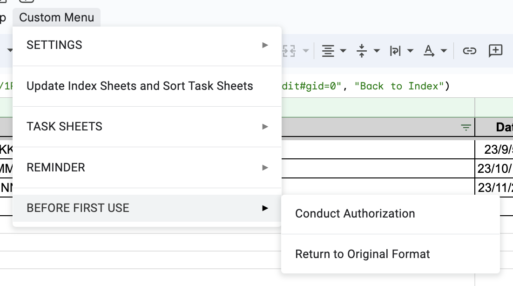
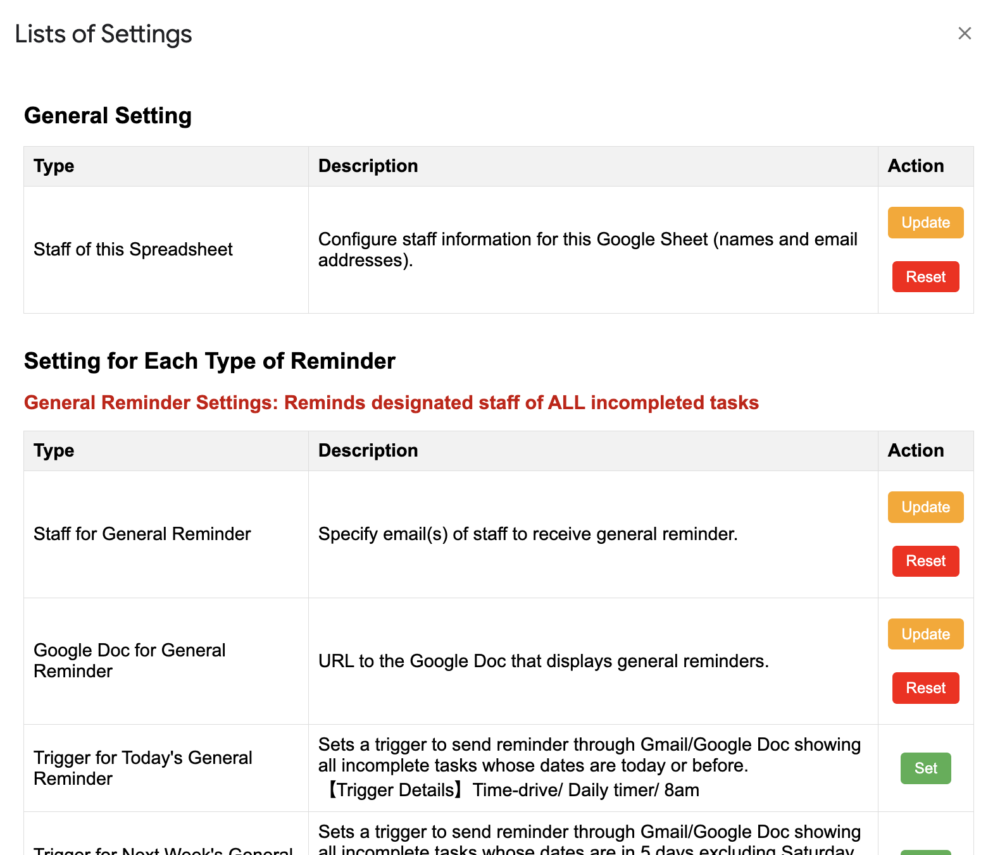
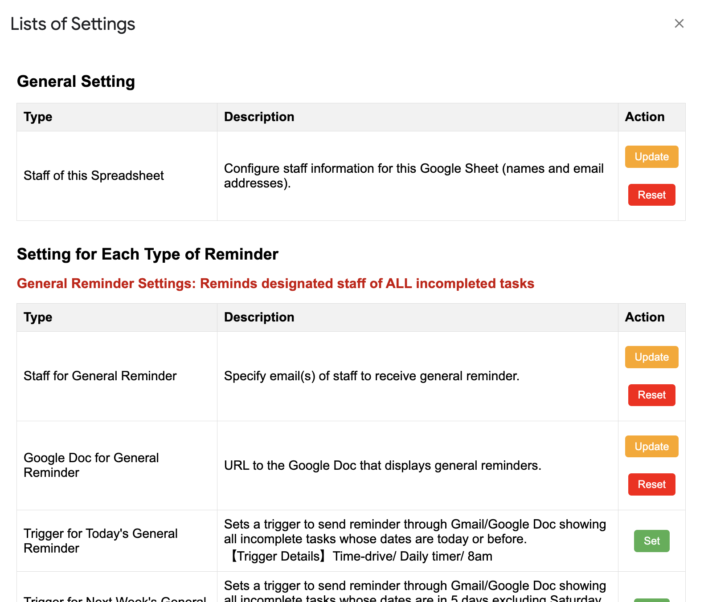

About this Project
This project involves a Google Apps Script designed to streamline and automate various tasks within Google Sheets.
- Automated task management and reminders.
- Seamless integration with Google Sheets functionalities.
- Customizable scripts for diverse use-cases.
Prerequisites
- A Google account with access to Google Sheets.
- Basic understanding of Google Sheets and Google Apps Script.
- Ability to follow step-by-step setup instructions.
Setup
- Open Your Google Sheet: Access Sample Google Sheet.
- Copy the Google Sheet to create your version.
-
Conduct GAS Authorization: Go to `Custom Menu` in the menu bar and click `BEFORE FIRST USE` > `Conduct Authorization`. This will redirect you to the authorization page for Google Apps Script.

- Return to Original Format: Go to `Custom Menu` in the menu bar and click `BEFORE FIRST USE` > `Return to Original Format`. This deletes all sample task sheets and clears the contents in the index sheets. Also, it resets information and triggers pre-defined as a sample. This makes the Google Sheet ready for your use.
- Customize Constant Variables for Built-in Functions (Optional): Go to the Apps Script editor and adjust the constants in `variables.gs` to suit your needs. This is optional and without customization, this project will still work.
Usage
-
Access `Custom Menu` > `SETTINGS` > `Set Pre-Defined Info` to configure necessary information.
- 【General Setting】: Mandatory to configure staff information.
- 【General Reminder Settings】: Set emails for general reminders, the Google Doc URL for displaying reminders, and triggers for reminders. Prior creation of a Google Doc for reminders is required.
- 【Staff-Based Reminder Settings】: Optional, for individual staff reminders. Prior creation of a Google Doc for each staff is required.
- 【Others】: Set triggers for updating task completion status.
*If the user would like to reset all pre-defined information and delete triggers, Access `Custom Menu` > `SETTINGS` > `Reset All Pre-Defined Info & Triggers`.
*Once the information is set, the button becomes either "update", "reset", or "delete", depending on type of the pre-set information.
 

-
Create task sheets and enter to-do items.
- Create new task sheets via `Custom Menu` > `TASK SHEETS` > `Create a New Task Sheet`. This enables the sheet to be created with designated format (row and column design, data validation, and making only designated users editable).
- Assign tasks to specific staff members using the dropdown in the task sheet.
- Optionally, test reminder functionalities via Custom Menu > REMINDER. Befor the use of this feature, please set up necessary information in 'SETTING'.
If the user wants to modify editors of the sheet (staff in charge of the task sheet), they can modify it by `Custom Menu` > `TASK SHEETS` > `Modify Editors of the Current Sheet`.